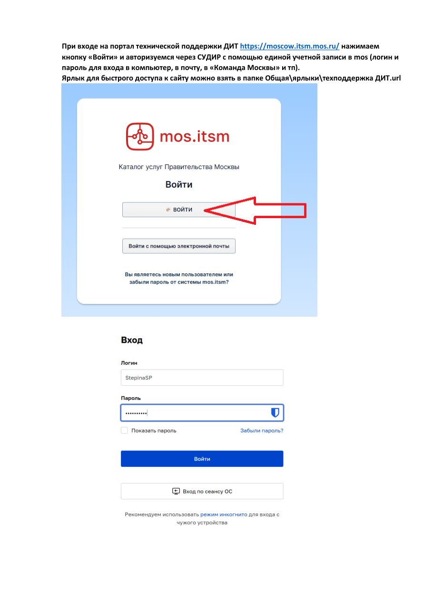

Техподдержка ДИТ
Если не работает компьютер, принтер, телефония или пропала сеть — заявка оформляется на портале moscow.itsm.mos.ru через единую учётную запись (СУДИР).
Как это работает
Инженер ДИТ на локации работает 5/2, с 9:00 до 18:00. Обращения через портал принимаются в любое время. В нерабочее время помощь оказывается силами удалённой поддержки ДИТ, выездом инженера ДИТ на локацию либо системным администратором ЕЦП — в объёме, соответствующем его правам доступа.
На компьютерах, предоставленных ДИТ, системные администраторы ЕЦП работают с правами обычного пользователя, поэтому ряд настроек выполняется только специалистами ДИТ.

Инструкция · по шагам Подача заявки в техподдержку ДИТ Вход через СУДИР, услуга «ДИТ. Техническая поддержка», адрес, отправка — со скриншотами Памятка Техподдержка ДИТ — памятка сотруднику Способы обращения, что придёт на почту после заявки, контакты службы
Видео · 12:30
Как подать заявку в техподдержку ДИТ — запись экрана